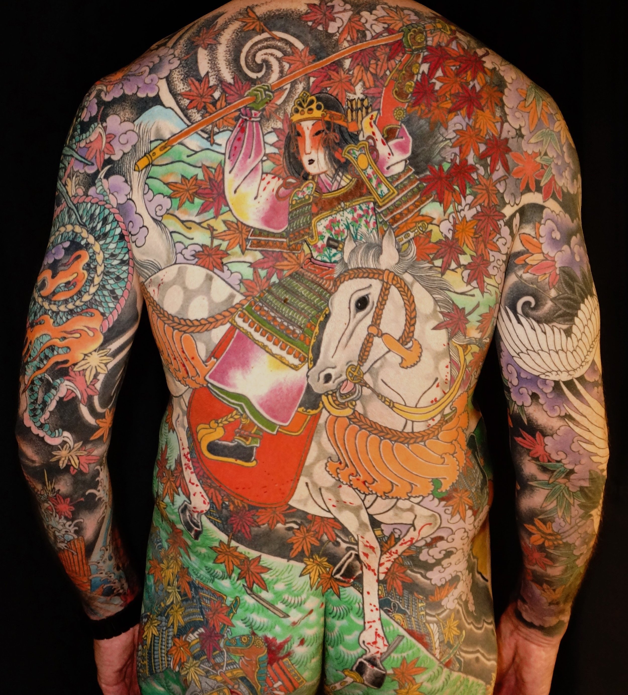
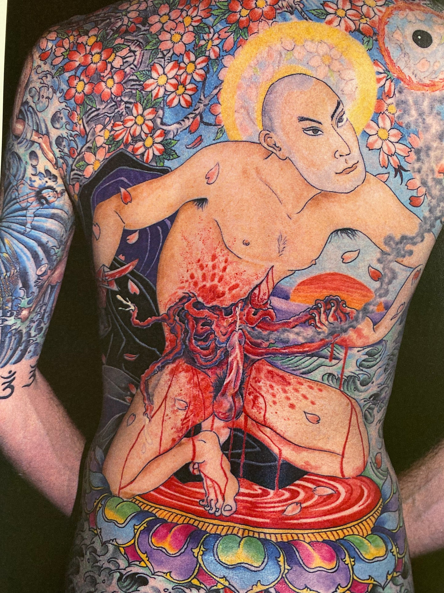
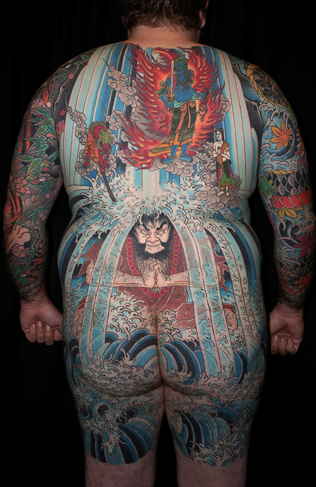
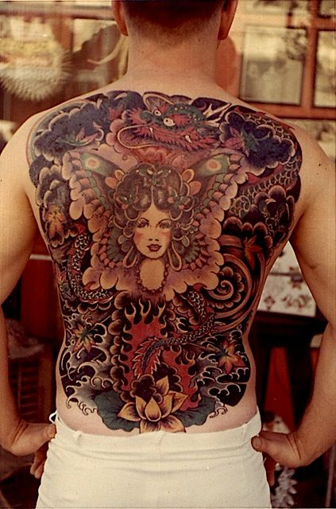

Ed Hardy
Hardy was mentored by several famous and prolific tattoo artists, including Samuel Steward (also known by his nickname “Professor” Phil Sparrow), a former college professor. As a child, Hardy had copied Steward's designs. Steward showed Hardy a book of Japanese tattoos Hardy, who had already been interested in Japanese history, culture and woodblock prints, had an epiphany; he described it as being struck by “lightning.” After Hardy finished his apprenticeship with Steward, he studied with the tattoo artists Zeke Owen in Seattle and Doc Webb in San Diego.
Eventually Hardy formed a relationship with one of the pioneers of modern tattoo culture, Sailor Jerry Collins, who had a major impact on Hardy's work. He met with and began a long correspondence with Sailor Jerry, which paved the way for an introduction into a world previously closed off to outsiders. Through Jerry’s connections, Hardy began an association, in 1973, with the classical tattoo master Horihide. Hardy studied and tattooed in Japan off and on through the '70s and '80s. According to Hardy, his clientele at the time included bikers and Yakuza members.
   